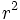

![[Main Page]](../../rsrc/bci2000logo.svg)
VisualizationDemo Signal Processing
Programming Reference
Location
src/contrib/SignalProcessing/VisualizationDemo
Synopsis
The VisualizationDemo signal processing module demonstrates how to send visualizations with arbitrary pixel content to the operator module. Two rendering methods are provided: Native Qt QPainter-based rendering, and BCI2000's own GraphDisplay based rendering.
Inheritance
The VisualizationDemoFilter signal processing filter derives from GenericFilter.
Function
The VisualizationDemoFilter computes the determination coefficient (squared correlation,  values) between its first and second input channel. The determination coefficient is visualized in form of a pie chart, and the pie chart is sent to the operator module as bitmap visualization data.
For various values of the value, the operator visualization window appears as follows:

Display of a medium value

{kind=link}
{kind=link}
Implementation
A BitmapVisualization object is used to send visualization window configuration, and bitmap data to the operator module. In the filter's Initialize() method, the bitmap visualization object's SendReferenceFrame() method is called to set an anchor for further visualization data. In the filter's Process() method, rendered visualization data is sent to the operator module using the bitmap visualization object's SendDifferenceFrame method as an update to existing image data.
Declaration of internal variables
The code example uses a pointer to an internal private struct to hide implementation details from the outer header file of the filter class (PIMPL idiom).
struct VisualizationDemoFilter::Private
{
Private();
~Private();
double computeCorrelation(const GenericSignal&, int idx1, int idx2);
RGBColor mBackground;
int mHeight, mWidth, mDecimation;
int mDecimationCounter;
// Object used to send visualization data to the operator
BitmapVisualization mVis;
// Object that holds image contents
GUI::GraphDisplay mImage;
// Objects that populate the image
PieShape* mpShape;
TextField* mpValueField;
};
Initialize() method
void VisualizationDemoFilter::Initialize(
const SignalProperties& Input,
const SignalProperties& Output)
{
// Initialize properties from parameters.
p->mWidth = Parameter("VisImageWidth");
p->mHeight = Parameter("VisImageHeight");
p->mBackground = RGBColor(Parameter("VisImageBackground"));
p->mDecimation = Parameter("VisImageDecimation");
// Set the image's width and height.
GUI::DrawContext c = { 0 };
c.rect.right = p->mWidth;
c.rect.bottom = p->mHeight;
p->mImage.SetContext(c);
// Set visualization window properties.
p->mVis.Send(CfgID::Left, 50);
p->mVis.Send(CfgID::Top, 50);
p->mVis.Send(CfgID::Width, p->mWidth);
p->mVis.Send(CfgID::Height, p->mHeight);
p->mVis.Send(CfgID::WindowTitle, "Visualization Demo");
// Setting WindowFrame to false will hide title bar and window frame.
p->mVis.Send(CfgID::WindowFrame, true);
p->mVis.Send(CfgID::Visible, true);
// Send an initial reference frame.
p->mpValueField->SetVisible(false);
p->mpShape->SetVisible(false);
p->mImage.SetColor(p->mBackground);
// Render the image.
p->mImage.Paint();
// Send the image's bitmap data to the operator as a reference frame.
p->mVis.SendReferenceFrame(p->mImage.BitmapData());
p->mpShape->SetVisible(true);
p->mpValueField->SetVisible(true);
}
Process() method
When indicated by the decimation counter, the Process() function computes the squared correlation between the input signal's first two channels, and draws a pie shape according to the result. The image is rendered by calling GraphDisplay::Paint() on the offscreen buffer, and then its bitmap data are sent as a difference frame by calling BitmapVisualization::SendDifferenceFrame() on the visualization object. Finally, the decimation counter is updated for the next call to Process().
void VisualizationDemoFilter::Process(
const GenericSignal& Input,
GenericSignal& Output)
{
Output = Input;
if (p->mDecimationCounter == 0)
{
// For demonstration, compute squared correlation between channel 1 and channel 2.
double value = p->computeCorrelation(Input, 0, 1);
value *= value;
std::ostringstream oss;
oss << std::setprecision(2) << std::fixed << value;
// Draw a pie shape that is full angle when value == 1, and that reduces to a line when value == 1.
// Send the image as a difference frame when done.
p->mpValueField->SetText(oss.str());
float angle = 270;
if (value == value) // not NaN
angle = 360 * value;
p->mpShape->SetStartAngle(180 - angle / 2).SetEndAngle(180 + angle / 2);
// Actually render the image.
p->mImage.Paint();
// Send the image's bitmap data as a difference frame.
p->mVis.SendDifferenceFrame(p->mImage.BitmapData());
}
// Update decimation counter.
++p->mDecimationCounter %= p->mDecimation;
}
BCI2000 GraphDisplay vs. QPainter rendering
The code presented here is using the BCI2000 GraphDisplay class.
GraphDisplay is a layer of abstraction that allows to render shapes and text objects into a normalized coordinate system. Code that uses GraphDisplay is most likely to survive breaking changes in the drawing backend (currently Qt) and BCI2000 dependencies.
In contrast, QPainter-based rendering provides access to more complex drawing functions but suffers from a limitation in Qt which makes text rendering impossible outside the main GUI thread.
In the VisualizationDemo source code, QPainter-based rendering is available through a compiler switch.
Parameters
VisImageWidth
Native image width in pixels.
VisImageHeight
Native image height in pixels.
VisImageBackground
The images' background color, in hexadecimal notation.
VisImageDecimation
A positive integer that indicates how often images are refreshed. 1 means every refresh on every signal packet.
See also
Programming Reference:GraphDisplay Class, Programming Reference:GenericVisualization Class, Programming Reference:ComplexVisualizationDemo Signal Processing